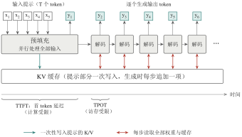
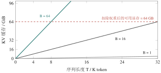

4.4 推理服务：让模型又快又省地回答请求
模型训练好之后，要面对的是真实用户：首字要出得快，输出要流畅，而显卡数量有限，还要尽量服务更多的人。从哪里入手？本节先把推理拆成预填充与解码两个阶段分别分析，再看 KV 缓存如何避免重复计算，以及 FlashAttention、PagedAttention、连续批处理和量化各自缓解哪一个瓶颈。效果用 TTFT、TPOT、吞吐和尾延迟等指标衡量；各项优化作用于不同环节，可以叠加使用，但彼此不能替代。
4.4.1 推理的两个阶段：预填充与解码
大模型以自回归方式生成文本：每次只预测下一个 token，并把它追加到输入末尾，再预测下一个。据此，一次请求的处理可以分为两个阶段（图 4-9）。
预填充（Prefill） 模型一次性并行处理用户输入的全部 token，计算每一层的注意力 Key 与 Value 并保存下来，同时得到第一个输出 token。由于大量 token 共享同一次权重读取，这一阶段算术强度高，通常计算受限。衡量它的指标是首 token 延迟（Time To First Token，TTFT），即从发出请求到看到第一个输出 token 的时间，其中还包括请求排队的时间。
解码（Decode） 模型逐个生成后续 token。每一步只处理一个新 token，却要读取全部权重和此前积累的 Key、Value，因此算术强度很低，通常访存受限（见第 4.1.3 小节）。衡量它的指标是每 token 输出时间（Time Per Output Token，TPOT），或其倒数——输出速度（token/s）。

图 4-9 一次推理请求的两个阶段。预填充并行处理全部输入、写入 KV 缓存并给出首个 token；之后每个解码步只生成一个 token，却要读取全部权重与已有缓存
两个阶段的特性不同，优化方向也不同：输入越长，预填充越耗时，TTFT 越大；输出越长，解码步数越多，总生成时间越长。
4.4.2 KV 缓存：用存储换计算
进入解码阶段后，每个新 token 都要与之前所有 token 的 Key 和 Value 做注意力运算。如果每生成一个 token 都把全部历史 token 的 Key 和 Value 重新算一遍，总计算量将随序列长度呈平方增长。这种重复能否避免？
注意到历史 token 的 Key 和 Value 一旦算出就不会改变，因此可以把它们保存下来，每步只为新 token 计算一次并追加到缓存中。这就是 KV 缓存（KV cache）。需要强调的是，KV 缓存保存的是注意力计算所需的中间状态，而不是已经生成好的答案。
省下的计算要用显存来换。KV 缓存的大小可估算为 \[M_{\mathrm{KV}} \approx 2 \times L \times H_{\mathrm{KV}} \times d_{\mathrm{head}} \times T \times B \times b_{\mathrm{KV}}, \tag{4-7}\] 其中系数 2 对应 Key 和 Value，\(L\) 为层数，\(H_{\mathrm{KV}}\) 为 KV 头数，\(d_{\mathrm{head}}\) 为每个头的维度，\(T\) 为序列长度，\(B\) 为同时驻留的请求数，\(b_{\mathrm{KV}}\) 为每个元素的字节数。
例 4-3 KV 缓存与并发上限
某 8B 模型有 32 层，采用分组查询注意力（GQA），KV 头数为 8，每头 128 维，以 BF16 存储（2 字节）。单个请求、序列长度 4096 时， \[M_{\mathrm{KV}} = 2\times32\times8\times128\times4096\times1\times2 \approx 5.4\times10^{8}\ \text{字节} = 0.5\,\text{GiB}.\] 在 80 GB 显卡上，BF16 权重约占 16 GB。即使不计其他开销，剩余显存也只能容纳约 \(64/0.54\approx 119\) 个这样的请求。若序列长度增加到 32K，单个请求的 KV 缓存将达到 4 GiB，并发上限随之降至约 15 个。
可见，KV 缓存随序列长度和并发数线性增长，往往比权重本身更早耗尽显存（图 4-10），成为长上下文、高并发服务的主要约束。计算时要注意：采用 GQA 或 MQA（多查询注意力）的模型，\(H_{\mathrm{KV}}\) 小于查询头数，不能误用查询头数代入。

图 4-10 例 4-3 中 8B 模型的 KV 缓存随序列长度 \(T\) 与并发请求数 \(B\) 的变化（BF16）。曲线与虚线的交点给出了该配置下能够支撑的最大上下文长度
4.4.3 推理优化技术
围绕上述瓶颈，形成了一系列推理优化技术。理解它们的关键，是分清每一种技术作用于哪个环节、解决什么问题。
FlashAttention：减少注意力计算中的显存读写 标准注意力实现会把 \(T\times T\) 的注意力分数矩阵完整写入显存再读回，序列越长，访存开销越大。FlashAttention[15]把计算分块，使中间结果尽量留在片上 SRAM 中，从而大幅减少对 HBM 的读写。它是精确的注意力计算，结果与标准实现在数学上等价，并非近似算法；但不同的输入形状和硬件所获得的加速效果并不相同。
PagedAttention：像管理内存页一样管理 KV 缓存 不同请求的输出长度事先未知，若按最大长度为每个请求预留连续显存，就会造成大量浪费和碎片。vLLM 提出的 PagedAttention[16]借鉴操作系统的分页虚拟内存：把 KV 缓存切成固定大小的块，按需分配，逻辑上连续、物理上可以分散。这显著提高了显存利用率，使同一张卡能容纳更多并发请求。
连续批处理：在每个解码步动态调度请求 传统的静态批处理要等一批请求全部完成后，才能开始下一批，先结束的请求只能空等。连续批处理（continuous batching）[17]在每个解码步检查请求状态：已完成的请求立即移出，新到达的请求随即加入。这使 GPU 始终保持较大的有效批大小，从而提高总吞吐。
量化：用更少的位数表示数值 量化用低精度格式存储权重（有时也包括激活值和 KV 缓存）：FP16 每参数 2 字节，INT8 为 1 字节，4 位量化约为 0.5 字节。由于解码阶段访存受限，减少权重字节数通常有助于提高输出速度，同时降低显存占用。代价是需要额外存储缩放系数等元数据、进行反量化计算，并可能导致精度下降，因此应在目标任务的数据上验证效果，而不能只看速度[14]。
表 4-5 总结了这四种技术的作用位置。它们针对的瓶颈不同，可以组合使用，但不能相互替代。
表 4-5 常见推理优化技术的作用位置
| 技术 | 作用位置 | 主要解决的问题 |
|---|---|---|
| FlashAttention | 注意力算子 | 注意力计算中对 HBM 的大量中间读写 |
| PagedAttention | KV 缓存的显存管理 | 预留连续显存造成的浪费和碎片，并发数受限 |
| 连续批处理 | 请求调度 | 静态批次中先完成的请求空等，GPU 利用率低 |
| 量化 | 数值表示 | 权重占用显存大，解码时访存量大 |
4.4.4 如何衡量推理性能
性能指标必须对应具体的用户体验或成本目标。常用指标包括：
TTFT：用户等待第一个字出现的时间，主要受排队和预填充影响；
TPOT（或输出速度）：连续生成时每个 token 的间隔，主要受解码阶段权重与 KV 缓存的读取影响；
吞吐：整个服务每秒处理的 token 数或完成的请求数，它与单个请求的速度是不同的指标；
尾延迟（如 P95、P99）：最慢的 5% 或 1% 请求的延迟。高并发时，部分请求可能远慢于平均水平，尾延迟往往比平均值更能反映真实体验。
这些指标之间存在权衡。增大批大小能让更多 token 共享权重读取，提高总吞吐；但也会占用更多 KV 缓存，并可能增加单个请求的排队时间和 TPOT。不存在能在所有负载下同时使 TTFT、吞吐和成本最优的调度策略。
辨析
报告“模型 A 比模型 B 快”时，必须同时说明硬件型号、精度、推理引擎及其版本、并发数，以及输入和输出长度的分布。缺少这些条件，性能数字既无法复现，也无法比较。
本节要点
预填充计算受限，决定 TTFT；解码访存受限，决定输出速度。
KV 缓存用显存换计算，随序列长度和并发数线性增长，可按式 （4-7） 估算。
FlashAttention、PagedAttention、连续批处理和量化分别作用于算子、显存管理、调度和数值表示。